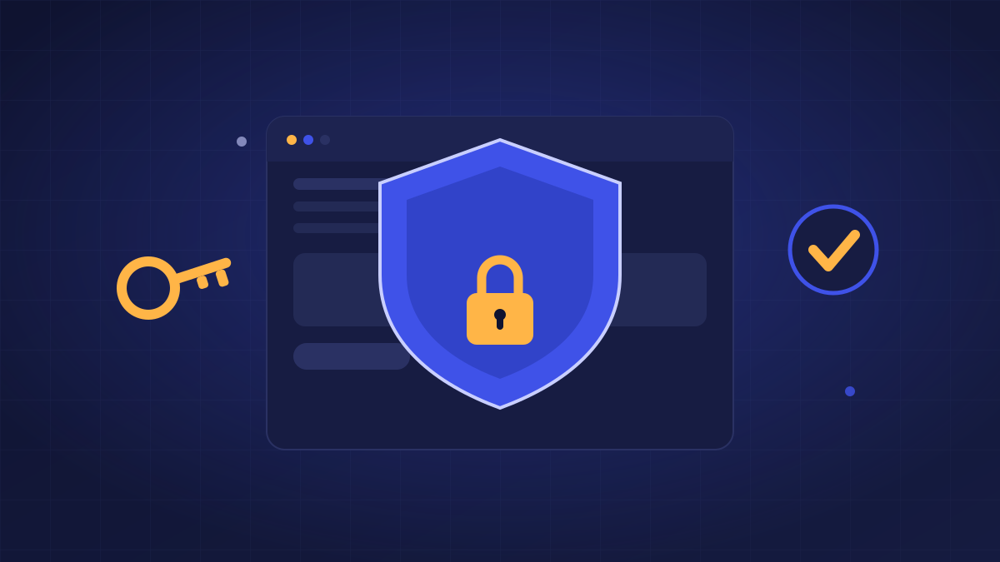

سایت وردپرسی چون رایجه، هدف زیاد قرار میگیره. خبر خوب اینه که اکثر خطرها با چند عادت ساده کم میشن. اینها خلاصه توصیههای راهنمای رسمی وردپرسن:
آپدیت همیشگی
هسته وردپرس و افزونهها رو آپدیت نگه دار و آپدیت خودکار رو فعال کن. نسخههای قدیمی دیگه وصله امنیتی نمیگیرن. وردپرس رو هم فقط از wordpress.org دانلود کن.
رمز قوی و تایید دومرحلهای
رمز طولانی و غیرقابلحدس بذار و تایید دومرحلهای رو برای ورود فعال کن. نام کاربری «admin» رو هم استفاده نکن.
مدیریت افزونهها
افزونههای بلااستفاده رو حذف کن و فقط از منابع معتبر نصب کن.
انتقال فایل امن
برای انتقال فایل به هاست از SFTP استفاده کن تا اطلاعات ورودت شنود نشه.
دسترسی فایلها و wp-admin
- سطح دسترسی فایلها رو محدود کن؛ سرور فقط جاهایی که لازمه (مثل uploads) حق نوشتن داشته باشه.
- از wp-admin با HTTPS و در صورت امکان رمز اضافه روی سرور محافظت کن.
- ویرایش فایل از داخل داشبورد رو با
DISALLOW_FILE_EDITغیرفعال کن.
بکآپ منظم
از فایلها و دیتابیس چند نسخه تاریخدار بگیر، جای امن نگه دار و یه بار هم بازیابیشون رو تست کن.
یه نکته
امنیت کامل وجود نداره، ولی با همین عادتها سایتت از اکثر حملههای رایج دور میمونه.